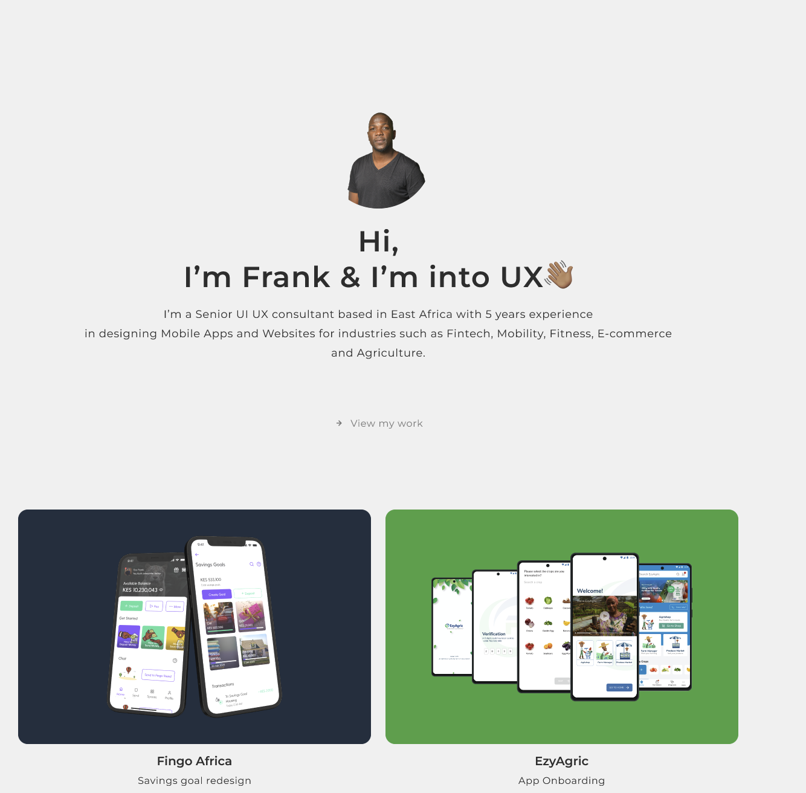

About Me

About Me
Senior UI/UX Consultant with 5+ years of experience crafting user-centric mobile apps and websites in East Africa.
Proven ability to translate complex business needs
into intuitive and engaging digital experiences that drive user adoption and growth.
Possesses a strong track record of success in diverse industries, including mobility, fitness, e-commerce, and agriculture.
MY EDUCATION
Here is my accademic trail
MY WORK EXPERIENCE
MAY 2023 - JUNE 2024
OneCart South Africa
Senior UI/UX designer
My Responsibilities
-
User Research: Conducting surveys, interviews,
and usability testing to understand user needs, behaviors, and pain points.
-
Designing the User Experience (UX):
-
Information Architecture & Wireframing:
Defining the content structure and user flow to
create a logical and intuitive navigation experience.
This involves creating wireframes, which are like blueprints for the interface.
-
Prototyping: Building interactive models to simulate the user experience and gather feedback.
-
Designing the User Interface (UI):
-
Visual Design: Crafting the look and feel of the interface, including color palettes, typography, layout, and iconography.
MAY 2022 - MARCH 2023
Fingo Africa FEB 2021 - JAN 2022
EzyAgricSEPT 2019 - MARCH 2020
SafeBodaMAY 2015 - AUGUST 2019
Masikini.com